Introspection
Monday
Today once I finished communing with the code I had a chill evening at home where I did chores. In lieu of something interesting outward I’m instead gonna look inward.
I came across a Substack article called “How to be more charismatic than 98% of people https://jessejamescarver.substack.com/p/how-to-become-more-charismatic-than?r=h4ele&utm_medium=ios
I won’t go through the whole article but one of the most interesting points was about understanding your motivations and masks. Essentially how do you desire to be seen by others and why do you want what you want.
I thought it would be a fun exercise to try and break these down based on my own answers. We shall start with the masks
Virtuous Masks
(Wanting to be seen as morally good.)
Do you want people to notice when you’ve done something generous?
Humza: Yeah I do think it’s better than when they don’t.
Have you ever done something good and then imagined how you’d tell someone about it?
Humza: Yeah I have
Do you quietly resent people who don’t acknowledge your moral effort?
Humza: not sure I have
What opinion do you hold that you’re afraid would make you look like a bad person?
Humza answer: Originally I wasn’t gonna answer this one but I’ll say that I don’t agree with a lot of boycott culture and think it’s kinda dumb to boycott a product just because of one person there. A related tangent as it affects some people in SF is that I don’t really support boycotting Mannys just because of the allegations against Manny. To be clear I’m not saying the action is good but I think boycotting all that doesn’t really make sense to me. Also when the topic came up one someone said “Isn’t he cancelled?” And to me that comes across as very lazy and almost mob mentality esque. I will admit I’m a bit biased here given my history of trash pickup but given what I understand of the incident I do think this kind of response is too much.
That being said I uphold the promise I made to myself not to go to trash pickup to force growth but I made that before these allegations came out and if they came out back when I was still going I would continue to go.
Do you need your “goodness” to be witnessed to feel that it counts?
Humza answer: No I have done plenty of good things I haven’t told others about. Obviously I can’t say what they are but while I said that I like it when people know because I’d be lying if I said I didn’t enjoy the validation, I believe in doing good for its own sake too
Humility Masks
(Wanting to be seen as modest.)
When you downplay an accomplishment, are you actually fishing for someone to insist otherwise?
Humza: Usually no but sometimes yes. I’d be lying if I said I don’t delight when people say I’m a really big walker or have done 300 trash pickups.
Have you ever performed humility to distinguish yourself from “arrogant” people?
Humza: Yeah sometimes. I’ll give a recent example. I was at a walking club and people were talking about their average number of steps. The two people I was conversing with mentioned 5-6k steps a day. They asked me if I walk and I simply responded “I’ve been known to put one foot in front of the other” without mentioning the 20k step per day average I’ve held over the last year plus.
Do you secretly keep a scorecard of how much credit you’ve given versus received?
Humza answer: No
Intelligence Masks
(Wanting to be seen as smart.)
What do you pretend to understand that you don’t?
Humza answer: So there are a few ways in which I do this. The first is when it comes to TV shows. This one is a bit more of a bit but I don’t watch a lot of popular TV shows like succession or severance or whatever other S show will enter the zeitgeist next. I may skim the Wikipedia article and pretend like I know it but this I do as more of a bit and I don’t really care if I’m caught or not.
The second more subtle way I do this is when I’m in a conversation with people that know a bunch about a common topic and it feels like it would be disruptive to ask them to explain everything so I just nod and say mmm. I realize this has the detriment of not being able to fully engage and may lead to some disconnection so I want to try doing it less. I don’t do this 1:1 but more when I’m with a group of people.
Do you feel threatened when someone in the room is clearly smarter than you?
Humza: No not really. I think this happens a lot at work but I don’t feel particularly bothered by it
What’s a topic you speak confidently about but have never actually studied?
Humza: Can’t say I’ve done this to my knowledge
Competence Masks
(Wanting to be seen as capable.)
What do you avoid attempting because you’re afraid of looking like a beginner?
Humza: I don’t really have much of a fear of looking like a beginner and I do find trying new things to be fun. What I do have though is an annoyance when I don’t perform at a level I think I should once I’ve gotten some skill in an activity. To give an example I used to do a fair amount of Krav Maga. When I first started I was totally cool messing up and having the instructors point out things I could improve. But once I gained experience I remember a day where I messed up quite a bit on something I had done before and was quite annoyed at myself.
Do you exaggerate your role in a success story when you retell it?
When you fuck something up, is your first instinct to fix it, or to explain why it wasn’t your fault?
Humza: Generally to try to fix it
Do you offer help in ways that make sure people know you’re the one who helped?
Humza: No not necessarily
Coolness Masks
(Wanting to be seen as interesting.)
Have you ever done something mainly because it would make a good story?
Humza: I’ve done a good number of things for this reason and the newsletter has frankly amplified this. Since I think more about narrating my life it does lead me to seek out things that could make good stories
Do you curate tastes (music, books, films) partly to signal something about yourself?
Humza: Nah not really. I don’t think I communicate too much about my taste in these things and I don’t think what like (for example being into anime and manga) I say because it curates some image of coolness.
Editor note post Monday: I don’t derive a lot of my image from things I like, rather from what I do which will be very relevant later in this newsletter.
When you tell a story about yourself, do you edit it to make you more interesting than you actually were?
Humza: Nah I think I’m quite good at reliably narrating my own stories except when I’m deliberately doing a bit
Above-It-All Masks
(Wanting to be seen as unbothered.)
Do you ever pretend not to care about something you actually care about deeply?
Humza: I care more about punctuality than I might let on. For as many social conventions as I admittedly flout I really value being on time to things and sometimes it does annoy me more than I’ll say that other people aren’t. Reliability is something I really value both in myself and others. I think that is one of the basic ways of showing it. Can I trust someone to come on time when I organize something is something I think about in the back of my head.
When you say “I don’t care what people think,” is that true or is it armor?
Humza: Some of both. There are ways in which I deeply care about what other people think. Some examples are that I deeply value being a reliable person and a good friend. However there are a lot of social norms that I readily violate and don’t care if I get judged (for example I used to eat a lot of food with mayo and didn’t really care or I’d go to restaurants not eat anything and tell the wait staff it was delicious and I got some looks for that one)
Do you mock people who try hard because it’s safer than admitting you want to try hard too?
Humza: I do genuinely respect effort in others and I don’t mock people. Also I do think I genuinely try hard for things that I want.
Self-Aware Masks
(The meta-mask: wanting to be seen as someone who’s done the work.)
Do you take pride in how self-aware you are?
Humza: sometimes I suppose. In some ways I’m definitely not very self aware but I guess all the improvements I’ve been doing this year have been something I’ve taken pride in.
Have you ever used the language of personal growth to avoid actually changing?
Humza: I’m not sure I’ve become less competitive since the last time I wrote about it being an issue despite saying that it’s an issue for me.
When you identify a flaw in yourself, do you treat the identification as equivalent to doing something about it?
Humza: No I dont. I do think its progress but I’ve identified flaws and thought I still need to work on them. As an example when I was fatter I made a number of fat jokes about myself but I didn’t equate that with having solved the problem.
Do you secretly feel superior to people who haven’t done “the work” you’ve done?
Humza: Yes and no. There have been times where doing a lot of the self improvement stuff that I have done has made me both proud of my ability to address changes and progress and also distorted I even needed to do it in the first place when a lot of people haven’t needed to do these things
For me I think the biggest takeaway when doing this is that I want to start asking more questions in group settings when I don’t think I know something rather than just going “mmm” because I think it may not be worth it.
Tuesday
Once I finished synchronizing the synergies I went to a pitch a friend event with “The Philosopher”. He said he wanted to take a stab at pitching me and I’m excited to see how it goes.
When I got there I talked with the host who I have some rapport with from previous events. She said I’m a celebrity there since this will be my third time being pitched. I think she meant that nicely but it made me think I gotta stop coming to these. I don’t want to be known as the guy that always comes to pitch a friend events.
This was definitely the smallest event I went to with only 4 pitches total; two guys and two girls. On the guys side it was me and this guy I met at boba buddies a while back being pitched by some other people from boba buddies. On the girl's side were these two 23 year olds, neither of whom I was particularly interested in. I talked with everyone before the pitch even started so already knew that this was going to be more squiggles than stripes.
Great job “The Philosopher” though he certainly delivered on the pitch. It gave me the warm and fuzzies being up there.
The other pitches were ok. Nothing amazing that made my heart skip a beat; nothing terrible that made me sprint out of there decrying that this is apparently what 2026 has led us to.
Part way through the pitches I did see a pretty attractive girl come in wearing a singles tag.
I talked with her and she seemed like quite a fun girl to talk with. She was engaging, funny, charming etc. I did notice though that we likely wouldn’t be comparable long term. For one thing she was dressed to the nines. While I did make sure to do my best and I wore the jacket head of fashion “The Yogi” recommended along with the chinos the two of us bought together, I wasn’t dressed to the nines. I think I was probably dressed to the sevens, possibly even the sixes. Further when I asked her what she did for fun her main hobbies were partying and traveling which raised some flags. Oh and she’s vegetarian. Individually some of these things can be managed but in the aggregate I was worried off the bat there could be a mismatch.
Nevertheless I figure I should still get her number and ask anyway because why not.
Afterwards me and “The Philosopher” go to Haru where I play some Coup with the locals. They had some interesting variations of the game such as not starting out with two coins and when you lose a card you keep it face up but can still use it.
Wednesday
Once I finished pulling the requests I went for a run at midnight runners but for whatever reason lost motivation part way through. I’m not sure what caused it but the idea of continuing to go felt unappealing to me. Maybe I just felt alone in a crowd.
Thursday
After I delivered shareholder value I went to bar night with “The Philosopher,” “The Awepartment,” “That’s nuts” and a visiting friend of “The Philosopher” and said visiting friend's friend.
While there I met this one girl who seemed cute. She was a paralegal who seemed witty and engaging. When I talked with her she seemed great until a bit of a flag came up in that she is a smoker. I asked my friends if they thought I had a shot with her and the reply was a resounding no. From what they said after having spoken to her more she lived a broadly interesting life but not in a way I would find interesting. Apparently she does a lot of drugs like coke which would not really jive with me which is true.
I got some advice that I need to think carefully about who the sort of people that I am into would likewise be into and similarly what kind of people would be into me. Where do I find these people? I think the local dive bar Haru probably isn’t it. I don’t think about it too much but a lot of the regulars at this dive bar have some rough circumstances and I realize I don’t really want to be one of the regulars here so for once I suggested we do a different bar for bar night next week. If it’s still Haru I might take a break for a bit to find something else. Maybe I’ll go line dancing again.
Friday
Once all the incentives were properly misaligned and I jammed it up the flagpole to see who would piss on it I treated “The Philosopher” to dinner to celebrate his new job offer. We went to a. Ukrainian place where I got some solid beef and lamb dumplings and some Ukrainian bread drink called Kvass. It wasn’t the best drink I ever had but it didn’t come out of the same sludge pile as IPAs. It was an ok if somewhat difficult drink.
Saturday
Today I went on the first date of the year. I made sure to follow the fashion advice of “The Yogi” and wear the brown leather jacket she said was the best one I had, the chinos she helped me pick out and my nicer white shoes.
Originally we were planning to meet in SF but unfortunately her car had issues so we met in the East bay. She offered to suggest some places but I figured I should take initiative and I asked some of my East bay coworkers for recs. I found a Japanese chicken place which she said was great and we met over there.
Unfortunately things don’t start off the strongest when it turns out the place is closed. We pivoted to a nearby coffee shop which was fine. On the plus side I got a compliment on the leather jacket from one of the baristas working there. This is an encouraging sign if I ever want to get into the male barista market. That time has not come but it’s worth being aware.
We walked around Lake Merritt and talked for a while. The conversation is mostly surface level. She seems like a nice person but I couldn’t say I felt any spark or chemistry. Of her hobbies the one I found the most interesting was a solo hobby of hers which is cleaning the house.
On my side I mention running, trash pickup, standup, and improv. I didn’t go into too many details with any of them because I wasn’t sure if a 60 mile walk or 300 trash pickups were quite what I wanted to lead with.
I did however notice after a bit that the conversation felt kinda generic so I teed up travel as a topic and then I told her the story of how I surprised “The Professor” in Vienna to which her reply was “oh … nice” the tone of which was a bit lukewarm which told me it didn’t land particularly well.
About 40 minutes in she said she needed to go hangout with friends and thus our date came to an end.
It was sudden but I realized after that there probably wasn’t going to be a second date. I’ll admit I wasn’t head over heels for her but my immediate reaction was disappointment.
This was the first date I went on post self improvement including all the first impression training, fashion, gymming etc so I really wanted this to go well to see how far I’ve come. This isn’t necessarily a fair expectation but it was what was how I was feeling at the time.
When I got back to SF I sat on a bench by Embarcadero station and just sulked for a while. All the disappointment I was feeling in myself hit me like a truck. I wondered what I could have done better. Obviously I suppose I should have double checked the restaurant would be open. I tried to be engaging and ask questions about her interests. Maybe I should have paid her a compliment on her outfit. It was a reasonable outfit but it didn’t take my breath away or anything.
It felt like for all the supposed progress I made I availed absolutely nothing from it and I felt worthless.
If I couldn’t do the one thing I’ve been putting so much effort into then what the hell can I do and are any of my other supposed accomplishments even worth anything otherwise
Rationally I know that’s not right, I could make a 100 arguments for why it’s just a numbers game, why one person's comparability with me isn’t a meaningful reflection of me but my lizard brain refused to listen to reason and kept me bummed out.
I then thought back to some advice I got from “The Philosopher” that I need to think about where I’m going to meet the woman for me. Trash pickup seems like the most obvious choice, but I wonder where else.
I wasn’t quite sure what to do at the moment and thought that maybe I should look up … which is why I hit up “The Juggler” to see if circus Saturday was still open and it was.
I went through and it was a great time. I got to learn a bunch of cool tricks. I did one where I balanced a club on my finger, one where I tried to juggle three balls at once, a bunch of acro yoga, and a diabolo.
For a brief amount of time I got to forget about all these feelings and do something fun which I really appreciated.
Afterwards I had dinner with “The Juggler” and his juggling friends and it was quite interesting. I learned a lot about juggling pedagogy. When teaching, do you focus on one ball at a time, try with multiple balls, in a group setting do you focus on the people behind or ahead. There was no one right answer to these questions and they debated a lot about what should be done.
From there I tried to go to a birthday party for someone I wasn’t particularly close to. It was a big birthday party with what was supposed to be 120 people in a big bar. The partiful said 9 so I showed up right at 9 only to find the reservation was at 10 with no notice from the hosts. I went home and debated going back only to find myself crashing in bed instead.
Sunday
Today as I was walking a coworker messaged me on reddit about someone who walked every street in SF only to realize this was someone I knew. I dug a bit deeper and realized they walked 39k steps a day on average. I’ll admit that this kinda bummed me out because I now realized I’m no longer the biggest walker I know which sounds like a silly thing to be bummed out about but I won’t lie and say I took some pride in being the best I knew at this particular niche. 39k steps a day on average makes my 20k look like a damn slug.
I suspect that yesterday still weighed on my mind but it felt like another part of my identity had slipped away in some form. Sure I still walk a lot in absolute terms but somehow seeing that I’m no longer the best I knew did have an effect.
I think I define an unhealthy amount of self worth based on what I can achieve and both of these things happening one after the other knocked me down a couple of pegs based on my own perceived definition of self and I think that's really hurting me here.
In both the cases above the fact that I couldn’t live up to my own expectations (either of impressing the girl on the date or of being the best walker I know), and I felt like I was collapsing underneath expectations I couldn’t meet which made me question what I’m worth if I can’t do the things I feel like I should be able to.
I don’t really have an answer long term here but for now these thoughts will sit on the back of my mind for the rest of the day.
I was curious what it would be and I saw dumplings or dumpling variants from all sorts of countries including the classic Chinese dumplings people would probably think of first and some less common ones like Rendang from Indonesia, and a local one I grew up with called Samosas which are common in South Asia.
The food itself was ok, I wasn’t really sure what I was expecting but long lines probably should have been on the list.
I’m glad I checked it out but I’ll admit that in and of itself it wasn’t too great.
What was great though was the fact that it let me run into two friends randomly. I caught up with “The Dentist” and we had a nice chat catching up on life, learning about her plans for a handmade halloween costume, and the fact that there is a viral sea lion called Chonkers. She bought me a matcha which I really appreciated!
Afterwards I separately ran into “Hell Yeah” and we walked around for a while through the dumpling festival and up to the IN-N-Out by Fisherman’s Wharf.
Later I went to “The Fisherwoman’s” place and I gave her the rundown on the date from yesterday and commiserated a bit. It felt good talking about that with someone.
After clearing my head somewhat it feels less like my fault and more like an incompatibility along with her being a bit rude for leaving early. For some extra context I definitely put in more effort since originally we were going to meet in SF but I accommodated her request to do Oakland because her car was being repaired she didn’t want to do BART and it was at the time she requested which makes it worse that she had to leave early to see friends. It's either poor planning or an excuse which doesn’t sit right with me.
From there we both went to “This little piggie didn’t go to the slaughterhouse” for a game night / dinner party. At a couple points people asked me how I was doing and I kinda fumbled the ball here; I should have just said good but I thought a bit more deeply about it and realized I wasn’t particularly good this week. I didn’t want to ruin the vibes of the party by giving an honest answer of how I was feeling and the different reconciliations of my dating life and lens of my self worth. Sometimes I hid it better than others but thankfully I glossed over it and tried to put the attention as much on others as I could.
“This little piggie didn’t go to the slaughterhouse” did a great job organizing the party, she decorated it all to look like Coraline and made a bunch of things to mimic the famous dinner scene in the movie including a cake that said welcome home, a rotisserie chicken, corn on the cob, and many more things that I was forgetting.
At the party “The Fisherwoman” was really zoomed out after a really long weekend of doing things out of scope for this newsletter and took a nap on the couch and played with some of the furniture like a cat tossing some pillows up, meowing, and curling up for a catnap. She wanted me to do couch therapy with her as she laid on the couch and I sat in the classic therapist position. We posited together the similarities between her and Coraline and tried to lay down the roots for the symbolism of it all/ To be clear I don’t normally write this sort of thing but “The Fisherwoman” quite wanted it and gave me explicit permission to mention how zoomed out she was.
The night ended playing a game called poetry for neanderthals which is like charades except instead of acting out a word you have to give clues that are only one syllable long. I floundered at this game and had a mini panic attack when trying to do it which is kinda funny in retrospect.
Personal training progress for the week
The dot plots below show every exercise logged through 10/22/2026; later dates are excluded. The x-axis is time, the y-axis is logged weight, and dot size represents reps or logged time. Bodyweight sets appear on the BW baseline.


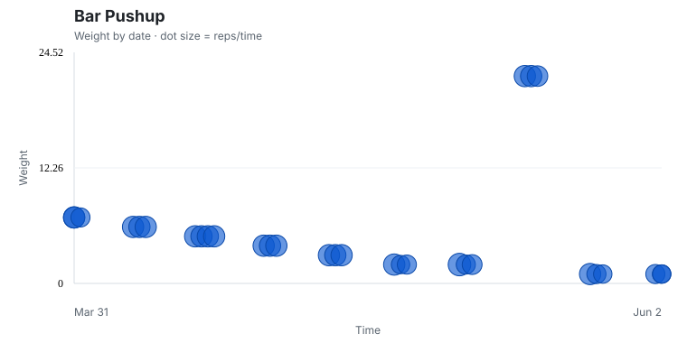
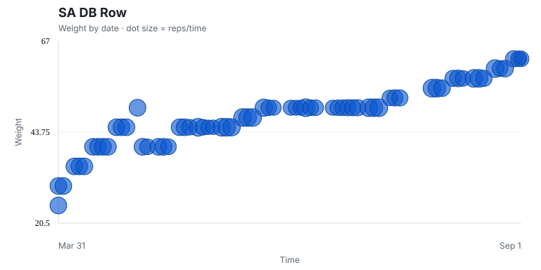
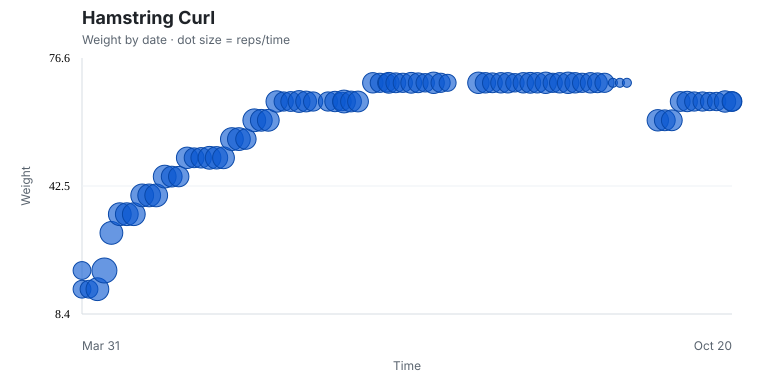


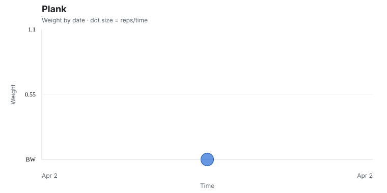
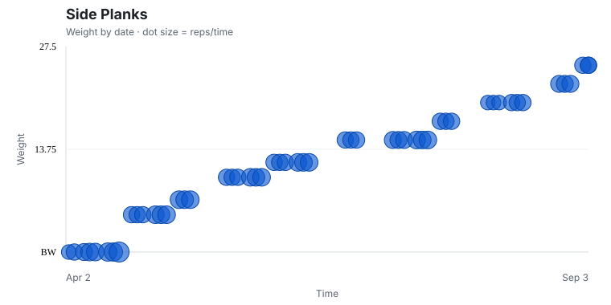

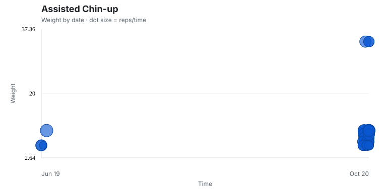
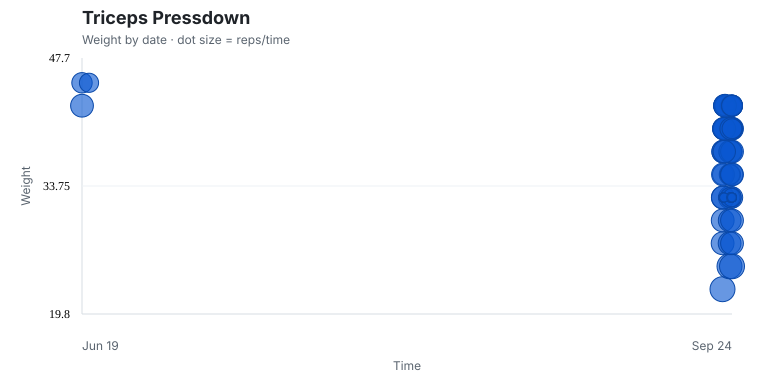
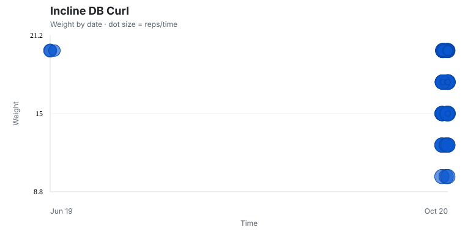


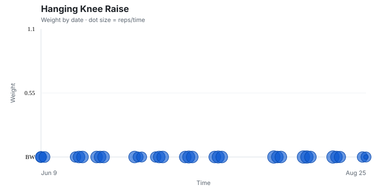
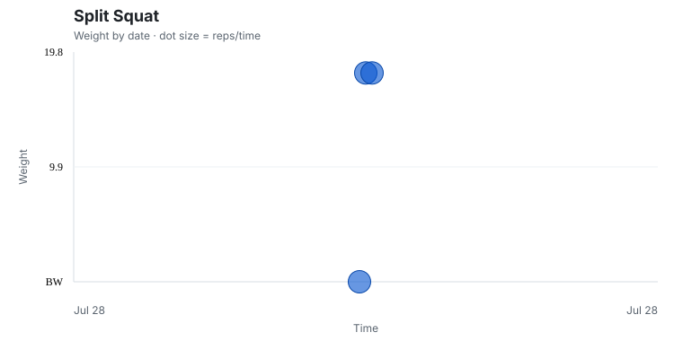
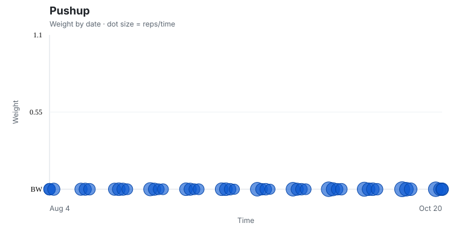

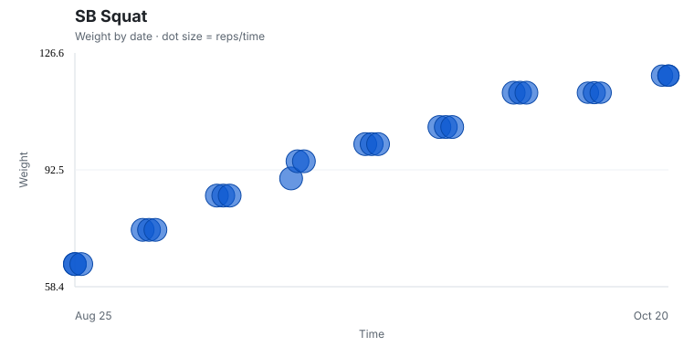

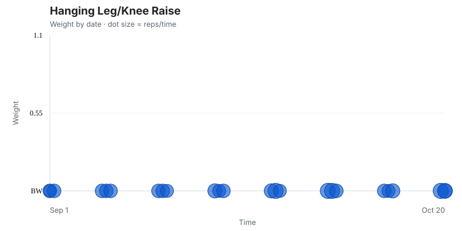

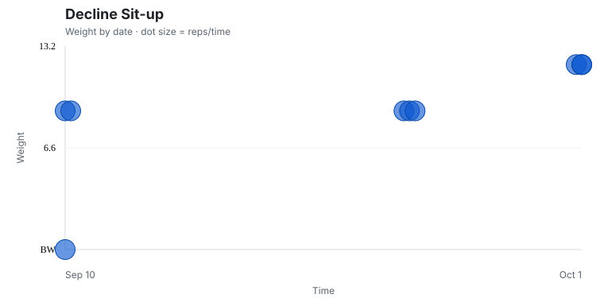